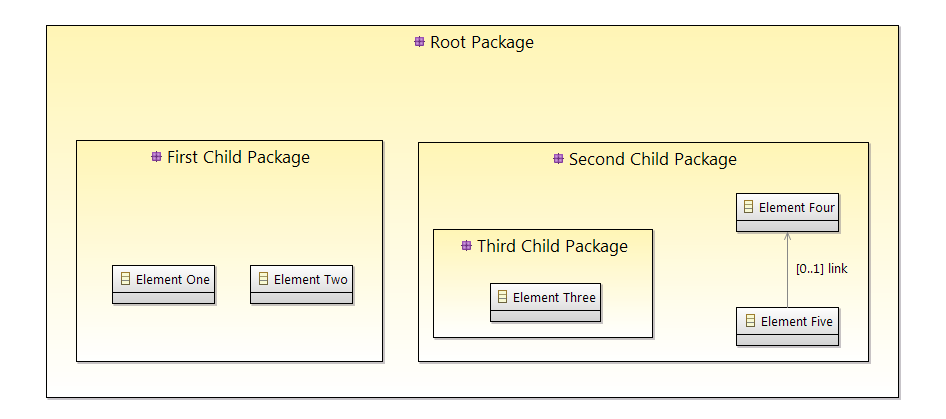

All the operations available in the Acceleo language
Some example requires an example model, thus we will use the following model as an example.
| Operation | Origin | Standard |
|---|---|---|
| = (elem: OclAny): Boolean | Ocl | Yes |
| <> (elem: OclAny): Boolean | Ocl | Yes |
| < (elem: T): Boolean | Ocl | Yes |
| > (elem: T): Boolean | Ocl | Yes |
| <= (elem: T): Boolean | Ocl | Yes |
| >= (elem: T): Boolean | Ocl | Yes |
| ancestors(): Sequence(OclAny) | Acceleo | No |
| ancestors(oclType: OclType): Sequence(OclType) | Acceleo | No |
| eAllContents(): Sequence(OclAny) | Acceleo | No |
| eAllContents(oclType: OclType): Sequence(OclType) | Acceleo | No |
| current(index: Integer): OclAny | Acceleo | No |
| current(oclType: OclType): OclType | Acceleo | No |
| eContainer(oclType: OclType): OclType | Acceleo | No |
| eContents(oclType: OclType): Sequence(OclType) | Acceleo | No |
| eGet(featureName: String): OclAny | Acceleo | No |
| eInverse(): Sequence(OclAny) | Acceleo | No |
| eInverse(oclType: OclType): Sequence(OclAny) | Acceleo | No |
| followingSiblings(): Sequence(OclAny) | Acceleo | No |
| followingSiblings(oclType: OclType): Sequence(OclType) | Acceleo | No |
| getProperty(key: String): String | Acceleo | No |
| getProperty(key: String, parameters: Sequence(OclAny)): String | Acceleo | No |
| getProperty(name:String, key: String): String | Acceleo | No |
| getProperty(name: String, key: String, parameters: Sequence(OclAny)): String | Acceleo | No |
| invoke(className: String, methodName: String, arguments: Sequence(OclAny)): OclAny | Acceleo | No |
| lineSeparator(): String | Acceleo | No |
| oclAsType(oclType: OclType): OclType | Ocl | Yes |
| oclIsInvalid(): Boolean | Ocl | Yes |
| oclIsKindOf(oclType: OclType): Boolean | Ocl | Yes |
| oclIsTypeOf(oclType: OclType): Boolean | Ocl | Yes |
| oclIsUndefined(): Boolean | Ocl | Yes |
| precedindSiblings(): Sequence(OclAny) | Acceleo | No |
| precedingSiblings(oclType: OclType): Sequence(OclType) | Acceleo | No |
| siblings(): Sequence(OclAny) | Acceleo | No |
| siblings(oclType: OclType): Sequence(OclAny) | Acceleo | No |
| toString(): String | Acceleo | No |
| + (str: String): String | Acceleo | No |
Returns true if self is equal to object.
| Expression | Result |
|---|---|
| ['first string' = 'first string'/] | true |
| ['first string' = Sequence{'a', 'b'}/] | false |
Returns false if self is equal to object.
| Expression | Result |
|---|---|
| ['first string' <> 'first string'/] | false |
| ['first string' <> Sequence{'a', 'b'}/] | true |
Returns true if self is comparable to object and less than object.
| Expression | Result |
|---|---|
| ['first string' < 'second string'/] | true |
| ['first string' < 'another string'/] | false |
Returns true if self is comparable to object and greater than object.
| Expression | Result |
|---|---|
| ['first string' > 'second string'/] | false |
| ['first string' > 'another string'/] | true |
Returns true if self is comparable to object and less than or equal to object.
| Expression | Result |
|---|---|
| ['first string' <= 'second string'/] | true |
| ['first string' <= 'first string'/] | true |
| ['first string' <= 'another string'/] | false |
Returns true if self is comparable to object and greater than or equal to object.
| Expression | Result |
|---|---|
| ['first string' >= 'second string'/] | false |
| ['first string' >= 'first string'/] | true |
| ['first string' >= 'another string'/] | true |
Returns a Sequence containing the full set of the receiver's ancestors.
| Expression | Result |
|---|---|
| [elementOne.ancestors()/] | Sequence{First Child Package, Root Package} |
Returns the elements of the given type from the set of the receiver's ancestors as a Sequence. The returned sequence's elements are typed with the expected type (so there's no need to invoke oclAsType(oclType) on the sequence or its elements). In this example, the element root is also returned because Model is an instance of Package. All the element returned are ancestors for which oclIsKindOf(oclType) returns true.
| Expression | Result |
|---|---|
| [elementOne.ancestors(EPackage)/] | Sequence{First Child Package, Root Package} |
| [elementOne.ancestors(EClass)/] | Sequence{} |
Returns the whole content tree of the receiver as a Sequence.
| Expression | Result |
|---|---|
| [rootPackage.eAllContents()/] | Sequence{First Child Package, Element One, Element Two, Second Child Package, Third Child Package, Element Three, Element Four, Element Five} |
Returns the elements of the given type from the whole content tree of the receiver as a Sequence. The returned sequence's elements are typed with the expected type (so there's no need to invoke oclAsType(oclType) on the sequence or its elements).
| Expression | Result |
|---|---|
| [rootPackage.eAllContents(EClass)/] | Sequence{Element One, Element Two, Element Three, Element Four, Element Five} |
Returns the value of the context index ranks above the current context.
| Expression | Result |
|---|---|
|
[for (anEPackage: EPackage | self.eSubpackages)] [for (anEClass: EClass | anEPackage.eClassifiers->filter(EClass))] [current(0)/] [current(1)/] [current(2)/] [/for] [/for] |
The expression "current(0)" returns self, in this case the current value of "anEClass". The expression "current(1)" returns the current value of "anEPackage". The expression "current(2)" returns the value of "self" before the first block "for". |
This will have the same effect as current(Integer) except that is will return the first context (self variable) of the given type, at or above the current one.
| Expression | Result |
|---|---|
|
[for (anEPackage: EPackage | self.eSubpackages)] [for (anEClass: EClass | anEPackage.eClassifiers->filter(EClass))] [current(EClass)/] [current(EPackage)/] [/for] [/for] |
The expression "current(EClass)" returns the current value of "anEClass". The expression "current(EPackage)" returns the current value of "anEPackage". |
Returns the first ancestor of the given type, i.e. the first ancestor for which oclIsKindOf(oclType) evaluates to true. The returned element is typed with the expected type (so there's no need to invoke oclAsType(oclType) on it).
Important: users of Acceleo 2.x should note that, contrary to what took place in acceleo 2.x, this operation never returns self even when self.oclIsKindOf(oclType) is true.
| Expression | Result |
|---|---|
| [elementOne.eContainer(EPackage)/] | First Child Package |
Returns a sequence of the direct children of self that are of the given type, i.e. the direct children for which oclIsKindOf(oclType) evaluates to true. The returned sequence's elements are typed with the expected type (so there's no need to invoke oclAsType(oclType) on the sequence or its elements).
| Expression | Result |
|---|---|
| [firstChildPackage.eContents(EClass)/] | Sequence{Element One, Element Two} |
This will fetch the value of the feature named featureName on the current Object. Return type can as well be a collection as a single value.
| Expression | Result |
|---|---|
| [elementFive.eGet('link')/] | Element Four |
Returns the sequence of all objects referencing self.
| Expression | Result |
|---|---|
| [elementFour.eInverse()/] | Sequence{Second Child Package, Element Five} |
Returns the elements of the given type from the set of the inverse references of self. The returned sequence's elements are typed with the expected type (so there's no need to invoke oclAsType(oclType) on the sequence or its elements).
| Expression | Result |
|---|---|
| [elementFour.eInverse(EClass)/] | Sequence{Element Five} |
| [elementFour.eInverse(EPackage)/] | Sequence{} |
Returns a Sequence containing the full set of the receiver's following siblings.
| Expression | Result |
|---|---|
| [thirdChildPackage.followingSiblings()/] | Sequence{Element Four, Element Five} |
Returns the elements of the given type from the set of the receiver's following siblings as a Sequence. The returned sequence's elements are typed with the expected type (so there's no need to invoke oclAsType(oclType) on the sequence or its elements).
| Expression | Result |
|---|---|
| [thirdChildPackage.followingSiblings(EClass)/] | Sequence{Element Four, Element Five} |
| [thirdChildPackage.followingSiblings(EPackage)/] | Sequence{} |
Returns the value of the property corresponding to the given key. Note that parameterized properties will be returned "as is" by this operation (parameters are not processed).
We are considering two files, a.properties containing:
And b.properties containing:
| Expression | Result |
|---|---|
| [getProperty('a.b.c')/] | 'This is a parameterized property: {0}' |
| [getProperty('a.b.c.d')/] | 'This is a standard property' |
| [getProperty('a.b.c.d.e')/] | '' |
Returns the value of the property corresponding to the given key, with its parameters substituted with the given values if any.
We are considering two files, a.properties containing:
And b.properties containing:
| Expression | Result |
|---|---|
| [getProperty('a.b.c', Sequence{'substitution'})/] | 'This is a parameterized property: substitution' |
| [getProperty('a.b.c', Sequence{'substitution'})/] | 'This is a parameterized property: {0}' |
| [getProperty('a.b.c.d', Sequence{'substitution'})/] | 'This is a standard property' |
Returns the value of the property corresponding to the given key from a properties file corresponding to the given name. Note that parameterized properties will be returned as is with this.
We are considering two files, a.properties containing:
And b.properties containing:
| Expression | Result |
|---|---|
| [getProperty('b.properties', 'a.b.c')/] | 'Parameterized property with a name conflict: {0}' |
| [getProperty('a.properties', 'a.b.c.d')/] | '' |
Returns the value of the property corresponding to the given key from a properties file corresponding to the given name, with its parameters substituted with the given values if any.
We are considering two files, a.properties containing:
And b.properties containing:
| Expression | Result |
|---|---|
| [getProperty('b.properties', 'a.b.c', Sequence{'substitution'})/] | 'Parameterized property with a name conflict: substitution' |
| [getProperty('b.properties', 'a.b.c', Sequence{})/] | 'Parameterized property with a name conflict: {0}' |
| [getProperty('a.properties', 'a.b.c.d', Sequence{'substitution'})/] | '' |
Invokes the Java method method of class class with the given arguments. This will return OclInvalid if the method cannot be called in any way (bad arguments, mispelled name, mispelled signature, encapsulation errors, ...). This is only intended to be used to call Java methods for now.
| Expression | Result |
|---|---|
| [invoke('java.lang.String', 'toUpperCase()', Sequence{elementOne.name})/] | ELEMENT ONE |
Returns the line separator of the current platform (similar to System.getProperty('line.separator')) or the line separator of the Eclipse properties if it has been changed by the user.
| Expression | Result |
|---|---|
| [lineSeparator()/] | '\n' (Unix) or '\r\n' (Dos) or '\r' (Mac Os Classic) |
Returns self statically typed as typespec if it is an instance of this type. Note that this does not alter the runtime value of self, it only enables access to subtype operations. This operation allows users to cast self to another type.
| Expression | Result |
|---|---|
| [elementOne.oclAsType(EClass)/] | Element One |
| [elementOne.oclAsType(EPackage)/] | Invalid |
Returns true if self is equal to invalid.
| Expression | Result |
|---|---|
| [elementOne.oclIsInvalid()/] | false |
Returns true if the type of self corresponds to the type or supertype of typespec, false otherwise. This operation allows users to check the class hierarchy of self much like would an instanceof Java.
| Expression | Result |
|---|---|
| [elementOne.oclIsKindOf(EClass)/] | true |
| [elementOne.oclIsKindOf(ENamedElement)/] | true |
Returns true if the type of self is the same as typespec, or false otherwise. This operation allows users to check the exact class type of self.
| Expression | Result |
|---|---|
| [elementOne.oclIsTypeOf(EClass)/] | true |
| [elementOne.oclIsTypeOf(ENamedElement)/] | false |
Returns true if self is equal to invalid or null.
| Expression | Result |
|---|---|
| [elementOne.oclIsUndefined()/] | false |
Returns a Sequence containing the full set of the receiver's preceding siblings.
| Expression | Result |
|---|---|
| [elementFive.precedingSiblings()/] | Sequence{Third Child Package, Element Four} |
Returns the elements of the given type from the set of the receiver's preceding siblings as a Sequence. The returned sequence's elements are typed with the expected type (so there's no need to invoke oclAsType(oclType) on the sequence or its elements).
| Expression | Result |
|---|---|
| [elementFive.precedingSiblings(EPackage)/] | Sequence{Third Child Package} |
Returns a Sequence containing the full set of the receiver's siblings.
| Expression | Result |
|---|---|
| [elementFour.siblings()/] | Sequence{Third Child Package, Element Five} |
Returns the elements of the given type from the set of the receiver's siblings as a Sequence. The returned sequence's elements are typed with the expected type (so there's no need to invoke oclAsType(oclType) on the sequence or its elements).
| Expression | Result |
|---|---|
| [elementFour.siblings(EPackage)/] | Sequence{Third Child Package} |
| [elementFour.siblings(EClass)/] | Sequence{Element Five} |
Returns the String representation of the receiver.
| Expression | Result |
|---|---|
| [elementOne.toString()/] | org.eclipse.emf.ecore.impl.EClassImpl@4d06b4 (name: Element One) (instanceClassName: null) (abstract: false, interface: false) |
Returns the string representation of the receiver concatenated with the given string.
| Expression | Result |
|---|---|
| [elementOne + 'a'/] | org.eclipse.emf.ecore.impl.EClassImpl@4d06b4 (name: Element One) (instanceClassName: null) (abstract: false, interface: false)a |
| Operation | Origin | Standard |
|---|---|---|
| concat(str: String): String | Ocl | Yes |
| contains(subString: String): Boolean | Acceleo | No |
| endsWith(subString: String): Boolean | Acceleo | No |
| equalsIgnoreCase(str: String): Boolean | Acceleo | No |
| first(n: Integer): String | Acceleo | Yes |
| index(subString: String): Integer | Acceleo | Yes |
| index(subString: String, index: Integer): Integer | Acceleo | No |
| isAlpha(): Boolean | Acceleo | Yes |
| isAlphanum(): Boolean | Acceleo | Yes |
| last(n: Integer): String | Acceleo | Yes |
| lastIndex(subString: String): Integer | Acceleo | No |
| lastIndex(subString: String, index: Integer): Integer | Acceleo | No |
| matches(regex: String): Boolean | Acceleo | No |
| prefix(str: String): String | Acceleo | No |
| replace(subStringRegex: String, replacementRegex: String): String | Acceleo | No |
| replaceAll(subStringRegex: String, replacementRegex: String): String | Acceleo | No |
| size(): Integer | Ocl | Yes |
| startsWith(subString: String): Boolean | Acceleo | No |
| strcmp(str: String): Integer | Acceleo | Yes |
| strstr(str: String): Boolean | Acceleo | Yes |
| strtok(str: String, n: Integer): String | Acceleo | Yes |
| substitute(origin: String, replacement: String): String | Acceleo | Yes |
| substituteAll(origin: String, replacement: String): String | Acceleo | No |
| substring(start: Integer): String | Acceleo | No |
| substring(start: Integer, end: Integer): String | Ocl | Yes |
| toInteger(): Integer | Ocl | Yes |
| tokenize(): Sequence(String) | Acceleo | No |
| tokenize(subString: String): Sequence(String) | Acceleo | No |
| tokenizeLine(): Sequence(String) | Acceleo | No |
| toLower(): String | Ocl | Yes |
| toLowerFirst(): String | Acceleo | Yes |
| toReal(): Real | Ocl | Yes |
| toUpperFirst(): String | Acceleo | Yes |
| toUpper(): String | Ocl | Yes |
| trim(): String | Acceleo | No |
| + (str: String): String | Acceleo | No |
Returns a string containing "self" followed by "str".
| Expression | Result |
|---|---|
| ['aString'.concat('anotherString')/] | 'aStringanotherString' |
Returns "true" if "self" contains the string "subString", "false" otherwise.
| Expression | Result |
|---|---|
| ['aString'.contains('String')/] | true |
| ['aString'.contains('anotherString')/] | false |
| ['aString'.contains('string')/] | false |
Returns "true" if "self" ends with the string "subString", "false" otherwise.
| Expression | Result |
|---|---|
| ['aString'.endsWith('String')/] | true |
| ['aString'.endsWith('anotherString')/] | false |
| ['aString'.endsWith('string')/] | false |
Returns "true" if "self" is equal to the string "str" ignoring case considerations, otherwise returns "false". Two strings are considered equal ignoring the case if they are of the same length and corresponding characters in the two strings are equal ignoring their case.
| Expression | Result |
|---|---|
| ['aString'.equalsIgnoreCase('anotherString')/] | false |
| ['aString'.equalsIgnoreCase('aString')/] | true |
| ['aString'.equalsIgnoreCase('astring')/] | true |
Returns the first "n" characters of "self", or "self" if its size is less than "n".
| Expression | Result |
|---|---|
| ['aString'.first(2)/] | 'aS' |
| ['aString'.first(0)/] | '' |
| ['aString'.first(-1)/] | Invalid |
| ['aString'.first(15)/] | 'aString' |
Returns the index of the string "subString" in "self", or "-1" if "self" contains no occurrence of "subString". Important: String indexes start at 1. Consequently the last character's index in a string is equal to the string's length.
| Expression | Result |
|---|---|
| ['aString'.index('a')/] | 1 |
| ['aString'.index('String')/] | 2 |
| ['aString'.index('Yop')/] | -1 |
Returns the index of the string "subString" in "self", or "-1" if "self" contains no occurrence of "subString" starting from the given "index". Important: String indexes start at 1. Consequently the last character's index in a string is equal to the string's length.
| Expression | Result |
|---|---|
| ['aString'.index('a', 1)/] | -1 |
| ['aString'.index('a', 0)/] | 1 |
| ['aString'.index('String', -1)/] | 2 |
Returns "true" if "self" consists only of alphabetical characters, "false" otherwise.
| Expression | Result |
|---|---|
| ['aString'.isAlpha()/] | true |
| ['aString1'.isAlpha()/] | false |
Returns "true" if "self" consists only of alphanumeric characters, "false" otherwise.
| Expression | Result |
|---|---|
| ['aString'.isAlphanum()/] | true |
| ['aString1'.isAlphanum()/] | true |
Returns the last "n" characters of "self", or "self" if its size is less than "n".
| Expression | Result |
|---|---|
| ['aString'.last(1)/] | 'g' |
| ['aString'.last(0)/] | '' |
| ['aString'.last(15)/] | 'aString' |
| ['aString'.last(-1)/] | Invalid |
Returns the last index of the string "subString" in "self", or "-1" if "self" contains no occurrence of "subString". Important: String indexes start at 1. Consequently the last character's index in a string is equal to the string's length.
| Expression | Result |
|---|---|
| ['aString'.lastIndex('i')/] | 5 |
| ['aString'.lastIndex('Yop')/] | -1 |
| ['aStringa'.lastIndex('a')/] | 8 |
Returns the last index of the string "subString" in "self", or "-1" if "self" contains no occurrence of "subString" up to the given "index". This operation has the same behavior as the Java operation "java.lang.String#lastIndex(java.lang.String, int)". Important: String indexes start at 1. Consequently the last character's index in a string is equal to the string's length.
| Expression | Result |
|---|---|
| ['aStringa'.lastIndex('a', 3)/] | 1 |
| ['aStringa'.lastIndex('a', 8)/] | 8 |
| ['aStringa'.lastIndex('a', -1)/] | -1 |
| ['aStringa'.lastIndex('i', 2)/] | -1 |
Returns "true" if "self" matches the given regular expression pattern "regex", "false" otherwise. The regex engine used is that of your runtime JDK. The given pattern is passed "as is" to the method matches of the java class String. For more about regular expressions, please refer to the JDK API documentation.
| Expression | Result |
|---|---|
| ['characters and spaces'.matches('[\\w\\s]+')/] | true |
| ['characters and spaces'.matches('[\\d\\s]+')/] | false |
Returns "self" prefixed by the string "str".
| Expression | Result |
|---|---|
| ['aString'.prefix('PREFIX')/] | 'PREFIXaString' |
| ['aString'.prefix('')/] | 'aString' |
Substitutes the first occurrence of the string "subStringRegex" in "self" by the "replacementRegex" string and returns the resulting string. Returns "self" if it contains no occurrence of the "subStringRegex". Note that both the "subStringRegex" and "replacementRegex" are treated as regular expressions.
| Expression | Result |
|---|---|
| ['replace operation'.replace('p', 'P')/] | 'rePlace operation' |
| ['repla ce operation'.replace('(\\w+)\\s*', '$1')/] | 'replace operation' |
Substitutes all the strings "subStringRegex" in "self" by the string "replacementRegex" and returns the resulting string. Returns "self" if it contains no occurrence of "subStringRegex". Note that both "subStringRegex" and "replacementRegex" are treated as regular expressions.
| Expression | Result |
|---|---|
| ['replaceAll operation'.replaceAll('p', 'P')/] | 'rePlaceAll oPeration' |
| ['Repla ce All Operation'.replaceAll('(\\w+)\\s*', '$1')/] | 'ReplaceAllOperation' |
Returns the number of characters composing "self".
| Expression | Result |
|---|---|
| ['aString'.size()/] | 7 |
| [''.size()/] | 0 |
Returns "true" if "self" starts with the string "subString", "false" otherwise.
| Expression | Result |
|---|---|
| ['aString'.startsWith('aStr')/] | true |
| ['aString'.startsWith('Str')/] | false |
| ['aString'.startsWith('')/] | true |
Returns an integer that is either negative, zero or positive depending on whether "str" is alphabetically less than, equal to or greater than "self". Note that upper case letters come before lower case ones, so that 'AA' is closer to 'AC' than it is to 'Ab'.
| Expression | Result |
|---|---|
| ['aString'.strcmp('aStr')/] | 3 |
| ['aString'.strcmp('a')/] | 6 |
Searches for string "str" in "self". Returns "true" if found, "false" otherwise. This operation is identical to 'contains'.
| Expression | Result |
|---|---|
| ['aString'.strstr('aStr')/] | true |
| ['aString'.strstr('Yop')/] | false |
Breaks "self" into a sequence of tokens, each of which delimited by any one of the characters in "str", and returns the next element in this sequence. The parameter flag should be "0" when strtok is called for the first time and will reset the sequence, "1" subsequently so as to access the next element.
| Expression | Result |
|---|---|
| ['aString'.strtok('S', 0)/] | 'a' |
| ['aString'.strtok('S', 1)/] | 'tring' |
| ['aString'.strtok('s', 0)/] | 'aString' |
Substitutes the string "origin" in "self" by the string "replacement" and returns the resulting string. Will return "self" if it contains no occurrence of the string "origin".
| Expression | Result |
|---|---|
| ['substitute operation'.substitute('t', 'T')/] | 'subsTitute operation' |
| ['substitute operation'.substitute('Yop', 'T')/] | 'substitute operation' |
Substitutes all the string "origin" in "self" by the string "replacement" and returns the resulting string. Returns "self" if it contains no occurrence of "origin". Unlike the replaceAll operation, neither "origin" nor "replacement" are considered as regular expressions.
| Expression | Result |
|---|---|
| ['substituteAll operation'.substituteAll('t', 'T')/] | 'subsTiTuTeAll operaTion' |
| ['substituteAll operation'.substituteAll('Yop', 'T')/] | 'substituteAll operation' |
Returns a substring of self, starting at startIndex (inclusive), until the end of self. Returns Ø when the startIndex is either negative, zero, or greater than self's length. Important: String indexes start at 1. Consequently the last character's index in a string is equal to the string's length.
| Expression | Result |
|---|---|
| ['substring'.substring(1)/] | 'substring' |
| ['substring'.substring(3)/] | 'bstring' |
| ['substring'.substring(0)/] | Invalid |
Returns a string containing all characters from self starting from index lower up to index upper included. Both lower and upper parameters should be contained between 1 and self.size() included. lower cannot be greater than upper.
| Expression | Result |
|---|---|
| ['substring'.substring(1, 5)/] | 'subst' |
| ['substring'.substring(0, 5)/] | Invalid |
| ['substring'.substring(1, 'substring'.size())/] | 'substring' |
Returns an Integer of value equal to self, or Ø if self does not represent an integer.
| Expression | Result |
|---|---|
| ['5'.toInteger()/] | 5 |
| ['-1'.toInteger()/] | -1 |
| ['five'.toInteger()/] | Invalid |
Returns a sequence of string containing all the parts of the original string tokenized using all the whitespaces as tokens.
| Expression | Result |
|---|---|
| ['this is a string'.tokenize()/] | Sequence{'this', 'is', 'a', 'string'} |
Returns a sequence containing all parts of self splitted with delimiters defined by the characters in String delim.
| Expression | Result |
|---|---|
| ['this is a string'.tokenize('i')/] | Sequence{'th', 's ', 's a str', 'ng'} |
| ['this is a string'.tokenize('o')/] | Sequence{'this is a string'} |
Returns a sequence containing all parts of self splitted with delimiters defined by using the line separator.
| Expression | Result |
|---|---|
| ['this is\n a\r\n string'.tokenizeLine()/] | Sequence{'this is', ' a', ' string'} |
Returns self with all characters converted to lowercase.
| Expression | Result |
|---|---|
| ['TO LoWeR'.toLower()/] | 'to lower' |
Returns a copy of self with its first character converted to lower case and returns it.
| Expression | Result |
|---|---|
| ['TO LoWeR First'.toLower()/] | 'tO LoWeR First' |
Returns a Real of value equal to self, or Ø if self does not represent a real.
| Expression | Result |
|---|---|
| ['3.14'.toReal()/] | 3.14 |
| ['pi'.toReal()/] | Invalid |
Returns a copy of self with its first character converted to upper case and returns it.
| Expression | Result |
|---|---|
| ['to upper first'.toUpperFirst()/] | 'To upper first' |
Returns self with all characters converted to uppercase.
| Expression | Result |
|---|---|
| ['to upper'.toUpperFirst()/] | 'TO UPPER' |
Removes all leading and trailing white space characters (tabulation, space, line feed, ...) of self.
| Expression | Result |
|---|---|
| [' a text to trim '.trim()/] | 'a text to trim' |
Concatenate self with the given string.
| Expression | Result |
|---|---|
| ['hello ' + 'world'/] | 'hello world' |
| Operation | Origin | Standard |
|---|---|---|
| abs(): Number | OCL | Yes |
| div(i: Integer): Integer (integer only) | OCL | Yes |
| floor(): Number | OCL | Yes |
| max(n: Number): Number | OCL | Yes |
| min(n: Number): Number | OCL | Yes |
| mod(i: Integer): Integer (integer only) | OCL | Yes |
| round(): Integer | OCL | Yes |
Returns the absolute value of self, self if it is already a positive number.
| Expression | Result |
|---|---|
| [3.14.abs()/] | 3.14 |
| [-3.14.abs()/] | -3.14 |
| [-(3.14.abs())/] | -3.14 |
| [(-3.14).abs()/] | 3.14 |
Returns the integer quotient of the division of self by i.
| Expression | Result |
|---|---|
| [5.div(2)/] | 2 |
| [5.div(0)/] | Invalid |
Returns the integer part of self if it is a Real, self if it is an Integer.
| Expression | Result |
|---|---|
| [5.9.floor()/] | 5 |
| [3.1.floor()/] | 3 |
Returns the greatest number between self and n.
| Expression | Result |
|---|---|
| [3.1111.max(3.2)/] | 3.2 |
Returns the lowest number between self and n.
| Expression | Result |
|---|---|
| [3.1111.min(3.2)/] | 3.1111 |
Returns the integer remainder of the division of self by i.
| Expression | Result |
|---|---|
| [7.mod(3)/] | 1 |
Returns the nearest integer to self if it is a Real, self if it is an Integer.
| Expression | Result |
|---|---|
| [5.9.round()/] | 6 |
| Operation | Origin | Standard |
|---|---|---|
| and(b: Boolean): Boolean | OCL | Yes |
| implies(b: Boolean): Boolean | OCL | Yes |
| or(b: Boolean): Boolean | OCL | Yes |
| not(): Boolean | OCL | Yes |
| xor(b: Boolean): Boolean | OCL | Yes |
See the table below for the result.
| True | False | |
|---|---|---|
| True | true | false |
| False | false | false |
See the table below for the result.
| True | False | |
|---|---|---|
| True | true | false |
| False | true | true |
See the table below for the result.
| True | False | |
|---|---|---|
| True | true | true |
| False | true | false |
See the table below for the result.
| True | False |
|---|---|
| false | true |
See the table below for the result.
| True | False | |
|---|---|---|
| True | false | true |
| False | true | false |
| Operation | Origin | Standard |
|---|---|---|
| addAll(collection: Collection(T)): Collection(T) | Acceleo | No |
| any(expr: OclExpression): OclAny | OCL | Yes |
| asBag(): Bag(T) | OCL | Yes |
| asOrderedSet(): OrderedSet(T) | OCL | Yes |
| asSequence(): Sequence(T) | OCL | Yes |
| asSet(): Set(T) | OCL | Yes |
| collect(expr: OclExpression): Collection(T2) | OCL | Yes |
| collectNested(expr: OclExpression): Collection(T2) | OCL | Yes |
| count(elem: T): Integer | OCL | Yes |
| excludes(elem: T): Boolean | OCL | Yes |
| excludesAll(c: Collection(T)): Boolean | OCL | Yes |
| excluding(elem: T): Collection(T) | OCL | Yes |
| exists(expr: OclExpression): Boolean | OCL | Yes |
| filter(oclType: OclType): Collection(OclType) | Acceleo | No |
| flatten(): Collection(T2) | OCL | Yes |
| forAll(expr: OclExpression): Boolean | OCL | Yes |
| includes(elem: T): Boolean | OCL | Yes |
| includesAll(c: Collection(T)): Boolean | OCL | Yes |
| including(elem: T): Collection(T) | OCL | Yes |
| isEmpty(): Boolean | OCL | Yes |
| isUnique(expr: OclExpression): Boolean | OCL | Yes |
| max(): T | OCL | Yes |
| min(): T | OCL | Yes |
| notEmpty(): Boolean | OCL | Yes |
| one(expr: OclExpression): Boolean | OCL | Yes |
| product(c: Collection(T2)): Set(Tuple(first: T, second: T2)) | OCL | Yes |
| reject(expr: OclExpression): Collection(T) | OCL | Yes |
| removeAll(collection: Collection(T)): Collection(T) | Acceleo | No |
| select(expr: OclExpression): Collection(T) | OCL | Yes |
| sep(separator: String): Sequence(OclAny) | Acceleo | No |
| sep(prefix: String, separator: String, suffix: String): Sequence(OclAny) | Acceleo | No |
| size(): Integer | OCL | Yes |
| sortedBy(expr: OclExpression): Sequence(T) | OCL | Yes |
| sum(): T | OCL | Yes |
Adds all the content of the given collection to the current collection.
| Expression | Result |
|---|---|
| [Sequence{'a', 'b', 'c'}->addAll(Sequence{'d', 'e', 'f'})/] | [Sequence{'a', 'b', 'c', 'd', 'e', 'f'}/] |
| [OrderedSet{'a', 'b', 'c'}->addAll(Sequence{'d', 'e', 'f'})/] | [OrderedSet{'a', 'b', 'c', 'd', 'e', 'f'}/] |
| [Sequence{'a', 'b', 'c'}->addAll(Bag{'d', 'e', 'f'})/] | [Sequence{'a', 'b', 'c', 'f', 'e', 'd'}/] |
| [Sequence{'a', 'b', 'c'}->addAll(Set{'d', 'e', 'f'})/] | [Sequence{'a', 'b', 'c', 'f', 'd', 'e'}/] |
Returns any element contained in self that validates the condition expr, null otherwise. Evaluation is shortcut as soon as an element validating expr is found. Note that the result of this on unordered collections will be random if more than one element validates expr.
| Expression | Result |
|---|---|
| [Sequence{'aWord', 'anotherWord', 'yetAnotherWord'}->any(s: String | s.startsWith('another'))/] | 'anotherWord' |
Returns a Bag containing all elements of self.
| Expression | Result |
|---|---|
| [Sequence{'a', 'b', 'c'}->asBag()/] | Bag{'a', 'b', 'c'} |
| [Set{'a', 'b', 'c'}->asBag()/] | Bag{'a', 'b', 'c'} |
| [OrderedSet{'a', 'b', 'c'}->asBag()/] | Bag{'a', 'b', 'c'} |
| [Bag{'a', 'b', 'c'}->asBag()/] | Bag{'a', 'b', 'c'} |
Returns an OrderedSet containing all elements of self. Element ordering is preserved when possible.
| Expression | Result |
|---|---|
| [Sequence{'a', 'b', 'c'}->asOrderedSet()/] | OrderedSet{'a', 'b', 'c'} |
| [Set{'a', 'b', 'c'}->asOrderedSet()/] | OrderedSet{'a', 'b', 'c'} |
| [OrderedSet{'a', 'b', 'c'}->asOrderedSet()/] | OrderedSet{'a', 'b', 'c'} |
| [Bag{'a', 'b', 'c'}->asOrderedSet()/] | OrderedSet{'a', 'b', 'c'} |
Returns a Sequence containing all elements of self. Element ordering is preserved when possible.
| Expression | Result |
|---|---|
| [Sequence{'a', 'b', 'c'}->asSequence()/] | Sequence{'a', 'b', 'c'} |
| [Set{'a', 'b', 'c'}->asSequence()/] | Sequence{'a', 'b', 'c'} |
| [OrderedSet{'a', 'b', 'c'}->asSequence()/] | Sequence{'a', 'b', 'c'} |
| [Bag{'a', 'b', 'c'}->asSequence()/] | Sequence{'a', 'b', 'c'} |
Returns a Set containing all elements of self.
| Expression | Result |
|---|---|
| [Sequence{'a', 'b', 'c'}->asSet()/] | Set{'a', 'b', 'c'} |
| [Set{'a', 'b', 'c'}->asSet()/] | Set{'a', 'b', 'c'} |
| [OrderedSet{'a', 'b', 'c'}->asSet()/] | Set{'a', 'b', 'c'} |
| [Bag{'a', 'b', 'c'}->asSet()/] | Set{'a', 'b', 'c'} |
Returns a collection containing the result of applying expr on all elements contained in self.
| Expression | Result |
|---|---|
| [Sequence{'a', 'b', 'c'}->collect(s: String | s.toUpper())/] | [Sequence{'A', 'B', 'C'}/] |
Returns a collection containing all the elements contained in self on which we applied the OclExpression expr. The results won't be flattened. The type of the resulting collection depends on the type of self.
Examples: For the purpose of these examples we'll assume here that we have a Class Person with a reference children. Our model contains two persons such as person1.children = {'James', 'Jane'} and person2.children = {'John'}.
| Expression | Result |
|---|---|
| [self.persons->collectNested(children.firstname)/] | [Sequence{Sequence{'James', 'Jane'}, Sequence{'John'}} /] |
Returns how many times object is in the collection self.
| Expression | Result |
|---|---|
| [Sequence{'a', 'b', 'c', 'd', 'a'}->count('a')/] | 2 |
Returns true if object is not contained in self, false otherwise.
| Expression | Result |
|---|---|
| [Sequence{'a', 'b', 'c'}->excludes('a')/] | false |
| [Sequence{'a', 'b', 'c'}->excludes('d')/] | true |
Returns true if no element of c2 is contained in self, false otherwise.
| Expression | Result |
|---|---|
| [Sequence{'a', 'b', 'c'}->excludesAll(Sequence{'a', 'd'})/] | false |
| [Sequence{'a', 'b', 'c'}->excludesAll(Sequence{'d', 'f'})/] | true |
Returns a collection containing all elements of self minus all occurences of object.
| Expression | Result |
|---|---|
| [Sequence{'a', 'b', 'c'}->excluding('a')/] | Sequence{'b', 'c'} |
Returns true if at least one element in self validates the condition expr, false otherwise. The evaluation stops as soon as one element validating expr is found.
| Expression | Result |
|---|---|
| [Sequence{'a', 'b', 'c'}->exists(s: String | s.size() > 1)/] | false |
| [Sequence{'a', 'b', 'cccc'}->exists(s: String | s.size() > 1)/] | true |
Filters out of the collection all elements that are not instances of the given type or any of its subtypes. The returned collection is typed according to type. Makes it easier to write select(e | e.oclIsKindOf(oclType)).oclAsType(oclType).
| Expression | Result |
|---|---|
| [Sequence{First Child Package, Second Child Package, Element Three}->filter(EClass)/] | Sequence{Element Three} |
| [Sequence{First Child Package, Second Child Package, Element Three}->filter(EPackage)/] | Sequence{First Child Package, Second Child Package} |
Returns a collection containing all elements of self recursively flattened.
| Expression | Result |
|---|---|
| [Sequence{Sequence{'a', 'b', 'c'}, Sequence{'a'}}/] | Sequence{'a', 'b', 'c', 'a'} |
Returns true if the all the elements contained in self validate the condition expr, false otherwise.
| Expression | Result |
|---|---|
| [Sequence{'a', 'b', 'c'}->forAll(s: String| s.startsWith('a'))/] | false |
Returns true if object is contained in self, false otherwise.
| Expression | Result |
|---|---|
| [Sequence{'a', 'b', 'c'}->includes('a')/] | true |
Returns true if all element of c2 are contained in self, false otherwise.
| Expression | Result |
|---|---|
| [Sequence{'a', 'b', 'c'}->includesAll(Sequence{'a', 'b'})/] | true |
Returns a collection containing all elements of self followed by object.
| Expression | Result |
|---|---|
| [Sequence{'a', 'b', 'c'}->including('a')/] | Sequence{'a', 'b', 'c', 'a'} |
Returns true if self is empty, false otherwise.
| Expression | Result |
|---|---|
| [Sequence{'a', 'b', 'c'}->isEmpty()/] | false |
Returns true if all elements contained in self evaluate to a distinct value for expr.
| Expression | Result |
|---|---|
| [Sequence{'a', 'b', 'c', 'a'}->isUnique(s: String | s.toUpper())/] | false |
The element with the maximum value of all elements in self. Elements must be of a type supporting the max operation. The max operation supported by the elements must take one parameter of type T and be both associative and commutative. UnlimitedNatural, Integer and Real fulfill this condition.
| Expression | Result |
|---|---|
| [Sequence{5, 9, 2}->max()/] | 9 |
The element with the minimum value of all elements in self. Elements must be of a type supporting the min operation. The min operation supported by the elements must take one parameter of type T and be both associative and commutative. UnlimitedNatural, Integer and Real fulfill this condition.
| Expression | Result |
|---|---|
| [Sequence{5, 9, 2}->min()/] | 2 |
Returns true if self contains at least one element, false otherwise.
| Expression | Result |
|---|---|
| [Sequence{'a', 'b', 'c'}->notEmpty()/] | true |
Returns true if there is only one element contained in self that validates the condition expr, false otherwise.
| Expression | Result |
|---|---|
| [Sequence{'a', 'b', 'c'}->one(s: String| s.startsWith('z'))/] | false |
Returns a Set of Tuples which represents the cartesian product of self with c2.
| Expression | Result |
|---|---|
| [Sequence{'a', 'b'}->product(Sequence{1, 2})/] | Set{Tuple{'a', 1}, Tuple{'b', 1}, Tuple{'b', 2}, Tuple{'a', 2}} |
Returns a collection with all elements of self except for those who validate the OclExpression expr.
| Expression | Result |
|---|---|
| [Sequence{'a', 'b', 'c'}->reject(s: String | s.startsWith('b'))/] | Sequence{'a', 'c'} |
Removes all the content of the given collection from the current collection.
| Expression | Result |
|---|---|
| [Sequence{'a', 'b', 'c'}->removeAll(Sequence{'b', 'c'})/] | Sequence{'a'} |
| [Sequence{'a', 'b', 'c'}->removeAll(Bag{'b', 'c'})/] | Sequence{'a'} |
| [Sequence{'a', 'b', 'c'}->removeAll(OrderedSet{'b', 'c'})/] | Sequence{'a'} |
| [Sequence{'a', 'b', 'c'}->removeAll(Set{'b', 'c'})/] | Sequence{'a'} |
Returns a collection with all elements of self that validate the OclExpression expr.
| Expression | Result |
|---|---|
| [Sequence{'a', 'b', 'c'}->select(s: String | not s.startsWith('a'))/] | Sequence{'b', 'c'} |
Returns all elements from the source collection separated by an element composed of the String separator.
| Expression | Result |
|---|---|
| [Sequence{'a', 'b', 'c'}->sep('haha')/] | Sequence{'a', 'haha', 'b', 'haha', 'c'} |
Returns all elements from the source collection separated by an element composed of the String separator with the prefix as the first element of the collection and the suffix as the latest element of the collection.
| Expression | Result |
|---|---|
| [Sequence{'a', 'b', 'c'}->sep('prefix', 'haha', 'suffix')/] | Sequence{'prefix', 'a', 'haha', 'b', 'haha', 'c', 'suffix'} |
Returns the number of elements contained in self.
| Expression | Result |
|---|---|
| [Sequence{'a', 'b', 'c'}->size()/] | 3 |
Returns a sorted collection containing all elements from self sorted in accordance with the OclExpression expr. This can be used on all kind of collections yet will always yield a Sequence-typed result except for OrderedSet which returns an OrderedSet.
| Expression | Result |
|---|---|
| [Sequence{'aaaa', 'bb', 'ccc'}->sortedBy(s: String | s.size())/] | Sequence{'bb', 'ccc', 'aaaa'} |
The addition of all elements in self. Elements must be of a type supporting the + operation. The + operation must take one parameter of type T and be both associative: (a+b) c = a(b+c), and commutative: a+b = b+a. UnlimitedNatural, Integer and Real fulfill this condition. If the + operation is not both associative and commutative, the sum expression is not well-formed, which may result in unpredictable results during evaluation. If an implementation is able to detect a lack of associativity or commutativity, the implementation may bypass the evaluation and return an invalid result.
| Expression | Result |
|---|---|
| [Sequence{1, 2, 3}->sum()/] | 6 |
| Operation | Origin | Standard |
|---|---|---|
| = (seq: Sequence(T)): Boolean | OCL | Yes |
| <> (seq: Sequence(T)): Boolean | OCL | Yes |
| append(elem: T): Sequence(T) | OCL | Yes |
| at(index: Integer): T | OCL | Yes |
| drop(n: Integer): Sequence(T) | Acceleo | No |
| dropRight(n: Integer): Sequence(T) | Acceleo | No |
| endsWith(subCollection: OrderedSet(T)): Boolean | Acceleo | No |
| endsWith(subCollection: Sequence(T)): Boolean | Acceleo | No |
| first(): T | OCL | Yes |
| indexOf(elem: T): Integer | OCL | Yes |
| indexOfSlice(subCollection: OrderedSet(T)): Integer | Acceleo | No |
| indexOfSlice(subCollection: Sequence(T)): Integer | Acceleo | No |
| insertAt(index: Integer, elem: T): Sequence(T) | OCL | Yes |
| last(): T | OCL | Yes |
| lastIndexOf(elem: T): Integer | Acceleo | No |
| lastIndexOfSlice(subCollection: OrderedSet(T)): Integer | Acceleo | No |
| lastIndexOfSlice(subCollection: Sequence(T)): Integer | Acceleo | No |
| prepend(elem: T): Sequence(T) | OCL | Yes |
| reverse(): Sequence(T) | Acceleo | No |
| startsWith(subCollection: OrderedSet(T)): Boolean | Acceleo | No |
| startsWith(subCollection: Sequence(T)): Boolean | Acceleo | No |
| subSequence(startIndex: Integer, endIndex: Integer):Sequence(T) | OCL | Yes |
| union(c: Sequence(T)): Sequence(T) | OCL | Yes |
Returns true if self contains the very same objects as seq in the very same order as they are in seq.
| Expression | Result |
|---|---|
| [Sequence{'a', 'b', 'c'} = Sequence{'a', 'b', 'c'}/] | true |
Returns true if self does not contain the same objects as seq, or if these objects are not in the same order as they are in seq.
| Expression | Result |
|---|---|
| [Sequence{'a', 'b', 'c'} <> Sequence{'a', 'b', 'c'}/] | false |
Returns a Sequence containing all elements of self followed by object.
| Expression | Result |
|---|---|
| [Sequence{'a', 'b', 'c'}.append('d')/] | Sequence{'a', 'b', 'c', 'd'} |
Returns the element of self at the index position.
| Expression | Result |
|---|---|
| [Sequence{'a', 'b', 'c'}->at(1)/] | 'a' |
Returns the collection after the removal of the n first elements.
| Expression | Result |
|---|---|
| [Sequence{'a', 'b', 'c'}->drop(2)/] | 'c' |
Returns the collection after the removal of the n latest elements.
| Expression | Result |
|---|---|
| [Sequence{'a', 'b', 'c'}->dropRight(2)/] | 'a' |
Indicates if the self collection ends with the given sub-collection.
| Expression | Result |
|---|---|
| [Sequence{'a', 'b', 'c'}->endsWith(OrderedSet{'b', 'c'})/] | true |
Indicates if the self collection ends with the given sub-collection.
| Expression | Result |
|---|---|
| [Sequence{'a', 'b', 'c'}->endsWith(Sequence{'b', 'c'})/] | true |
Returns the first element of the sequence.
| Expression | Result |
|---|---|
| [Sequence{'a', 'b', 'c'}->first()/] | 'a' |
Returns the position of object in sequence self.
| Expression | Result |
|---|---|
| [Sequence{'a', 'b', 'c'}->indexOf('a')/] | 1 |
Returns the position of the subcollection in the sequence self.
| Expression | Result |
|---|---|
| [Sequence{'a', 'b', 'c'}->indexOfSlice(Sequence{'b', 'c'})/] | 2 |
Returns the position of the subcollection in the sequence self.
| Expression | Result |
|---|---|
| [Sequence{'a', 'b', 'c'}->indexOfSlice(OrderedSet{'b', 'c'})/] | 2 |
Returns a Sequence containing self with object inserted at the index position.
| Expression | Result |
|---|---|
| [Sequence{'a', 'b', 'c'}->insertAt(1, 'z')/] | Sequence{'z', 'a', 'b', 'c'} |
Returns the last element of self.
| Expression | Result |
|---|---|
| [Sequence{'a', 'b', 'c'}->last()/] | 'c' |
Returns the last position of the object elem in the sequence self.
| Expression | Result |
|---|---|
| [Sequence{'a', 'b', 'c', 'a'}->lastIndexOf('a')/] | 4 |
Returns the last position of the subcollection in the sequence self.
| Expression | Result |
|---|---|
| [Sequence{'a', 'b', 'c', 'b', 'c'}->lastIndexOfSlice(Sequence{'b', 'c'})/] | 4 |
Returns the last position of the subcollection in the sequence self.
| Expression | Result |
|---|---|
| [Sequence{'a', 'b', 'c', 'b', 'c'}->lastIndexOfSlice(OrderedSet{'b', 'c'})/] | 4 |
Returns a Sequence containing object followed by all elements of self .
| Expression | Result |
|---|---|
| [Sequence{'a', 'b', 'c'}->prepend('z')/] | Sequence{'z', 'a', 'b', 'c'} |
Reverses the order of the collection: the last element becomes the first and vice-versa.
| Expression | Result |
|---|---|
| [Sequence{'a', 'b', 'c'}->reverse()/] | Sequence{'c', 'b', 'a'} |
Returns true if self starts with the given sub-collection.
| Expression | Result |
|---|---|
| [Sequence{'a', 'b', 'c'}->startsWith(Sequence{'a', 'b'})/] | true |
Returns true if self starts with the given sub-collection.
| Expression | Result |
|---|---|
| [Sequence{'a', 'b', 'c'}->startsWith(OrderedSet{'a', 'b'})/] | true |
Returns a Sequence containing all elements of self between the positions 'startIndex' and 'endIndex'.
| Expression | Result |
|---|---|
| [Sequence{'a', 'b', 'c'}->subSequence{1, 2}/] | Sequence{'a', 'b'} |
Returns a Sequence containing all elements of self followed by all elements of seq.
| Expression | Result |
|---|---|
| [Sequence{'a', 'b', 'c'}->union(Sequence{'d', 'e'})/] | Sequence{'a', 'b', 'c', 'd', 'e'} |
| Operation | Origin | Standard |
|---|---|---|
| = (c: Set(T)): Boolean | OCL | Yes |
| = (c: OrderedSet(T)): Boolean | OCL | Yes |
| <> (c: Set(T)): Boolean | OCL | Yes |
| <> (c: Set(T)): Boolean | OCL | Yes |
| - (c: Set(T)): Set(T) | OCL | Yes |
| append(elem: T): OrderedSet(T) | OCL | Yes |
| at(index: Integer): T | OCL | Yes |
| drop(n: Integer): OrderedSet(T) | Acceleo | No |
| dropRight(n: Integer): OrderedSet(T) | Acceleo | No |
| endsWith(subCollection: OrderedSet(T)): Boolean | Acceleo | No |
| endsWith(subCollection: Sequence(T)): Boolean | Acceleo | No |
| first(): T | OCL | Yes |
| indexOf(elem: T): Integer | OCL | Yes |
| indexOfSlice(subCollection: OrderedSet(T)): Integer | Acceleo | No |
| indexOfSlice(subCollection: Sequence(T)): Integer | Acceleo | No |
| insertAt(index: Integer, elem: T): OrderedSet(T) | OCL | Yes |
| intersection(c: Bag(T)): Set(T) | OCL | Yes |
| intersection(c: Set(T)): Set(T) | OCL | Yes |
| last(): T | OCL | Yes |
| lastIndexOf(elem: T): Integer | Acceleo | No |
| lastIndexOfSlice(subCollection: OrderedSet(T)): Integer | Acceleo | No |
| lastIndexOfSlice(subCollection: Sequence(T)): Integer | Acceleo | No |
| prepend(elem: T): OrderedSet(T) | OCL | Yes |
| reverse(): OrderedSet(T) | Acceleo | No |
| startsWith(subCollection: OrderedSet(T)): Boolean | Acceleo | No |
| startsWith(subCollection: Sequence(T)): Boolean | Acceleo | No |
| subOrderedSet(startIndex: Integer, endIndex: Integer): OrderedSet(T) | OCL | Yes |
| symmetricDifference(c: Set(T)): Set(T) | OCL | Yes |
| union(c: Bag(T)): Bag(T) | OCL | Yes |
| union(c: Set(T)): Set(T) | OCL | Yes |
Returns true if self contains the same objects as set.
| Expression | Result |
|---|---|
| [OrderedSet{'a', 'b', 'c'} = Set{'a', 'b', 'c'}/] | true |
Returns true if self contains the same objects as orderedset regardless of element ordering.
| Expression | Result |
|---|---|
| [OrderedSet{'a', 'b', 'c'} = OrderedSet{'a', 'b', 'c'}/] | true |
Returns true if self does not contain the same objects as set.
| Expression | Result |
|---|---|
| [OrderedSet{'a', 'b', 'c'} <> Set{'a', 'b', 'c'}/] | false |
Returns true if self does not contain the same objects as orderedset.
| Expression | Result |
|---|---|
| [OrderedSet{'a', 'b', 'c'} <> OrderedSet{'a', 'b', 'c'}/] | false |
Returns a Set containing all elements of self minus all elements of c.
| Expression | Result |
|---|---|
| [OrderedSet{'a', 'b', 'c'} - Set{'a', 'c'}/] | OrderedSet{'b'} |
Returns an OrderedSet containing all elements of self followed by object.
| Expression | Result |
|---|---|
| [OrderedSet{'a', 'b', 'c'}->append('d')/] | OrderedSet{'a', 'b', 'c', 'd'} |
Returns the element of self located at position index in the collection.
| Expression | Result |
|---|---|
| [OrderedSet{'a', 'b', 'c'}->at(1)/] | 'a' |
Returns an ordered set containing all the element of self minus the n first elements.
| Expression | Result |
|---|---|
| [OrderedSet{'a', 'b', 'c'}->drop(2)/] | OrderedSet{'c'} |
Returns an ordered set containing all the element of self minus the n last elements.
| Expression | Result |
|---|---|
| [OrderedSet{'a', 'b', 'c'}->dropRight(2)/] | 'a' |
Indicates if self ends with the given sub-collection.
| Expression | Result |
|---|---|
| [OrderedSet{'a', 'b', 'c'}->endsWith(OrderedSet{'b', 'c'})/] | true |
Indicates if self ends with the given sub-collection.
| Expression | Result |
|---|---|
| [OrderedSet{'a', 'b', 'c'}->endsWith(Sequence{'b', 'c'})/] | true |
Returns the first element of self.
| Expression | Result |
|---|---|
| [OrderedSet{'a', 'b', 'c'}->first()/] | 'a' |
Returns the position of elem in self.
| Expression | Result |
|---|---|
| [OrderedSet{'a', 'b', 'c'}->indexOf('b')/] | 2 |
Returns the index of the sub-collection in self.
| Expression | Result |
|---|---|
| [OrderedSet{'a', 'b', 'c'}->indexOfSlice(OrderedSet{'b', 'c'})/] | 2 |
Returns the index of the sub-collection in self.
| Expression | Result |
|---|---|
| [OrderedSet{'a', 'b', 'c'}->indexOfSlice(Sequence{'b', 'c'})/] | 2 |
Returns an OrderedSet containing self with object inserted at the index position.
| Expression | Result |
|---|---|
| [OrderedSet{'a', 'b', 'c'}->insertAt(1, 'z')/] | OrderedSet{'z', 'a', 'b', 'c'} |
Returns a Set containing all elements of self that are also contained by c.
| Expression | Result |
|---|---|
| [OrderedSet{'a', 'b', 'c'}->intersection(Bag{'a', 'b'})/] | Set{'a', 'b'} |
Returns a Set containing all elements of self that are also contained by c.
| Expression | Result |
|---|---|
| [OrderedSet{'a', 'b', 'c'}->intersection(Set{'a', 'b'})/] | Set{'a', 'b'} |
Returns the last element of self.
| Expression | Result |
|---|---|
| [OrderedSet{'a', 'b', 'c'}->last()/] | 'c' |
Returns the last index of elem in self.
| Expression | Result |
|---|---|
| [OrderedSet{'a', 'b', 'c', 'b'}->lastIndexOf('b')/] | 4 |
Returns the last index of the given sub-collection in self.
| Expression | Result |
|---|---|
| [OrderedSet{'a', 'b', 'c', 'b', 'c'}->lastIndexOfSlice(OrderedSet{'b', 'c'})/] | 4 |
Returns the last index of the given sub-collection in self.
| Expression | Result |
|---|---|
| [OrderedSet{'a', 'b', 'c', 'b', 'c'}->lastIndexOfSlice(Sequence{'b', 'c'})/] | 4 |
Returns an OrderedSet containing object followed by all elements of self.
| Expression | Result |
|---|---|
| [OrderedSet{'a', 'b', 'c'}->prepend('z')/] | OrderedSet{'z', 'a', 'b', 'c'} |
Returns self reversed, the first element becoming the last one.
| Expression | Result |
|---|---|
| [OrderedSet{'a', 'b', 'c'}->reverse()/] | OrderedSet{'c', 'b', 'a'} |
Indicates if self starts with the given sub-collection.
| Expression | Result |
|---|---|
| [OrderedSet{'a', 'b', 'c'}->startsWith(OrderedSet{'a', 'b'})/] | true |
Indicates if self starts with the given sub-collection.
| Expression | Result |
|---|---|
| [OrderedSet{'a', 'b', 'c'}->startsWith(Sequence{'a', 'b'})/] | true |
Returns an OrderedSet containing all elements of self between the positions startIndex and endIndex.
| Expression | Result |
|---|---|
| [OrderedSet{'a', 'b', 'c'}->subOrderedSet(1, 2)/] | OrderedSet{'a', 'b'} |
Returns a Set containing all of the elements of self and set that are not present in both.
| Expression | Result |
|---|---|
| [OrderedSet{'a', 'b', 'c'}->symmetricDifference(Set{'a'})/] | Set{'b', 'c'} |
Returns a Bag containing all elements of self followed by all elements of bag.
| Expression | Result |
|---|---|
| [OrderedSet{'a', 'b', 'c'}->union(Bag{'d', 'e'})/] | Bag{'a', 'b', 'c', 'd', 'e'} |
Returns a Set containing all elements of self followed by all elements of set.
| Expression | Result |
|---|---|
| [OrderedSet{'a', 'b', 'c'}->union(Set{'d', 'e'})/] | Set{'a', 'b', 'c', 'd', 'e'} |
| Operation | Origin | Standard |
|---|---|---|
| = (c: Set(T)): Boolean | OCL | Yes |
| <> (c: Set(T)): Boolean | OCL | Yes |
| - (c: Set(T)): Set(T) | OCL | Yes |
| intersection(c: Bag(T)): Set(T) | OCL | Yes |
| intersection(c: Set(T)): Set(T) | OCL | Yes |
| symmetricDifference(c: Set(T)): Set(T) | OCL | Yes |
| union(c: Bag(T)): Bag(T) | OCL | Yes |
| union(c: Set(T)): Set(T) | OCL | Yes |
Returns true if self contains the same objects as c.
| Expression | Result |
|---|---|
| [Set{'a', 'b', 'c'} = Set{'b', 'c', 'a'}/] | true |
Returns true if self does not contains the same objects as c.
| Expression | Result |
|---|---|
| [Set{'a', 'b', 'c'} <> Set{'b', 'c', 'a'}/] | false |
Returns a Set containing all elements of self minus all elements of set.
| Expression | Result |
|---|---|
| [Set{'a', 'b', 'c'} - Set{'a'}/] | Set{'c', 'b'} |
Returns a Set containing all elements of self that are also contained in c.
| Expression | Result |
|---|---|
| [Set{'a', 'b', 'c'}->intersection(Bag{'a'})/] | Set{'a'} |
Returns a Set containing all elements of self that are also contained in c.
| Expression | Result |
|---|---|
| [Set{'a', 'b', 'c'}->intersection(Set{'a'})/] | Set{'a'} |
Returns a Set containing all of the elements of self and set that are not present in both.
| Expression | Result |
|---|---|
| [Set{'a', 'b', 'c'}->symmetricDifference(Set{'b', 'c', 'd'})/] | Set{'a', 'd'} |
Returns a Bag containing all elements of self and all elements of bag.
| Expression | Result |
|---|---|
| [Set{'a', 'b', 'c'}->union(Bag{'a'})/] | Bag{'a', 'a', 'c', 'b'} |
Returns true if self contains the same objects as set.
| Expression | Result |
|---|---|
| [Set{'a', 'b', 'c'}->union(Set{'d'})/] | Set{'d', 'b', 'c', 'a'} |
| Operation | Origin | Standard |
|---|---|---|
| = (c: Bag(T)): Boolean | OCL | Yes |
| <> (c: Bag(T)): Boolean | OCL | Yes |
| intersection(c: Bag(T)): Bag(T) | OCL | Yes |
| intersection(c: Set(T)): Set(T) | OCL | Yes |
| union(c: Bag(T)): Bag(T) | OCL | Yes |
| union(c: Set(T)): Bag(T) | OCL | Yes |
Returns true if self contains the same objects as bag in the same quantities.
| Expression | Result |
|---|---|
| [Bag{'a', 'b', 'c'} = Bag{'c', 'b', 'a'}/] | true |
Returns true if self does not contains the same objects as bag in the same quantities.
| Expression | Result |
|---|---|
| [Bag{'a', 'b', 'c'} <> Bag{'b', 'a', 'c'}/] | false |
Returns a Bag containing all elements of self that are also contained by bag.
| Expression | Result |
|---|---|
| [Bag{'a', 'b', 'c'}->intersection(Bag{'a'})/] | Bag{'a'} |
Returns a Set containing all elements of self that are also contained by set.
| Expression | Result |
|---|---|
| [Bag{'a', 'b', 'c'}->intersection(Set{'a'})/] | Set{'a'} |
Returns a Bag containing all elements of self and all elements of bag.
| Expression | Result |
|---|---|
| [Bag{'a', 'b', 'c'}->union(Bag{'a', 'd'})/] | Bag{'a', 'd', 'c', 'a', 'b'} |